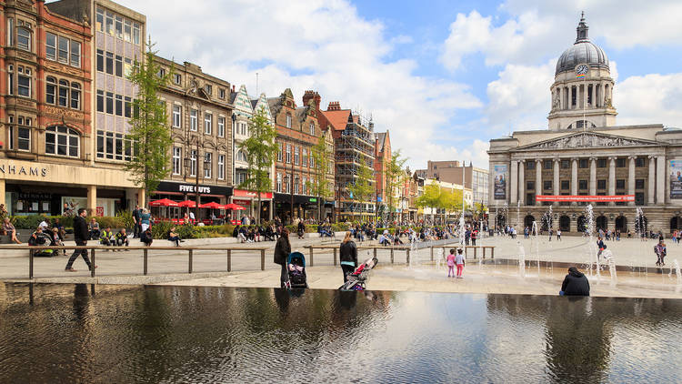

Nottingham is a city full of places to eat, drink and socialise, with a selection of restaurants for every taste and budget. Enjoy a exploration of Nottingham's restaurants, cafes and bars from fine dining at the elegant Tom Browns Brasserie and the two-Michelin-starred Sat Bains to casual pub food at the likes of the Lincolnshire Poacher and Forest Lodge, we have plenty to whet your appetite.
International cuisine finds itself at home in Nottinghamshire with a range of Indian restaurants including MemSaab, Calcutta Club and The Cumin. There are plenty of places to enjoy tapas with friends, including Bar Iberico, Revolucion de Cuba, Las Iguanas and Strays or you can try rustic French dining at Bistrot Pierre. If you're a burger enthusiast, head to the authentic American burger restaurant - Annie's Burger Shack, which offers a wide variety of meaty, veggie and vegan burgers or Son of Steak where you can indulge in chicken burgers and mouth-watering steaks.
For those struggling to decide which cuisine they'd like to indulge in, Cosmo World Buffet is a must - enjoy food from all around the world, including Japanese, Thai, Italian, Mexican and so much more.